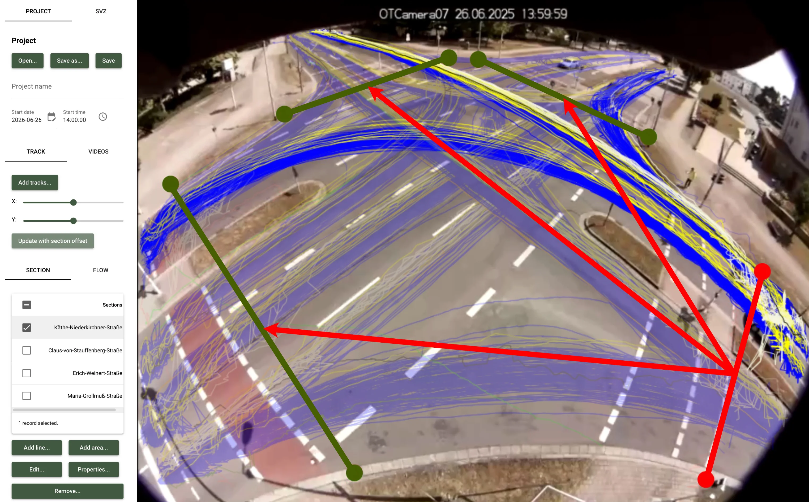

Verkehrsdatenerfassung: Grundlage moderner Verkehrsplanung¶

Wenn Sie Verkehrsmaßnahmen planen, eine Kreuzung umbauen oder Parkraum neu organisieren möchten, stellt sich immer zuerst eine zentrale Frage: Was passiert hier eigentlich im Verkehr?
Genau hier setzt die Verkehrsdatenerfassung an. Sie liefert die objektive Datengrundlage, auf der Verkehrs- und Stadtplaner, Ingenieurbüros und kommunale Behörden fundierte Entscheidungen treffen können. Dass für die Erhebung der Daten Videotechnik als besonders effizient und verlässlich gilt, zeigt die Straßenverkehrszählung 2025 (SVZ 2025): Diese setzte erstmals bundesweit auf die Möglichkeit von Videokameras mit semi-automatisierter Auswertung.
Dabei geht die Verkehrsdatenerfassung weit über eine reine Zählung hinaus. Die erhobenen Daten bilden die Basis für Analyse, Planung und Verkehrsmanagement. Der folgende Überblick zeigt, wie Verkehrsdatenerfassung technisch funktioniert, wie sie in der Praxis eingesetzt wird und welche Anforderungen Planungsstellen dabei insbesondere beim Datenschutz beachten müssen.
Was versteht man unter Verkehrsdatenerfassung?¶
Verkehrsdatenerfassung – auch Verkehrsdatenerhebung oder Verkehrserhebung – bezeichnet die systematische Gewinnung von Daten über Verkehrsteilnehmende und Verkehrsbewegungen. Sie umfasst sowohl Zählungen als auch Messungen und bildet die Grundlage für Verkehrsanalysen, Planungsentscheidungen und ein datenbasiertes Verkehrsmanagement.
Verkehrsdatenerfassung: Begrifflichkeiten & typische Datentypen¶
In der Fachterminologie der FGSV (Forschungsgesellschaft für Straßen- und Verkehrswesen) ist „Verkehrserhebung" ein Oberbegriff. Gemeint ist die „systematische, planmäßige und methodisch kontrollierte Gewinnung von Daten über den Verkehr und die daran Beteiligten". In der Praxis wird auch oft der Begriff Verkehrsdatenerfassung verwendet.
Wichtig ist die Abgrenzung zur Verkehrszählung. Zählungen erfassen in erster Linie diskrete Merkmale, also beispielsweise die Anzahl von Fahrzeugen an einem Querschnitt. Die Verkehrsdatenerfassung geht deutlich weiter: Sie bildet die Basis für Zählungen und auch für Messungen und ermöglicht damit ein umfassenderes Bild des Verkehrs.
Typische Datentypen, die heute erfasst werden:
- Trajektorien als vollständige Bewegungspfade einzelner Verkehrsteilnehmender
- Geschwindigkeiten – sowohl punktuell als auch über Streckenabschnitte
- Zeitlücken und Abstände zwischen Fahrzeugen
- Fahrzeugklassen, etwa Pkw, Lkw, Busse und Radfahrende sowie zu Fuß Gehende
- Abbiegebeziehungen an Kreuzungen, Einmündungen und Kreisverkehren
- Belegungsgrade im ruhenden Verkehr, etwa bei Parkraumanalysen
Solche Informationen werden häufig unter dem Begriff Mobilitätsdaten zusammengefasst, die darüber hinaus aber noch weitere Daten umfassen können. Damit lassen sich Verkehrsabläufe wesentlich präziser verstehen als mit den reinen Zählwerten eines Verkehrszählgeräts.
Praxisbeispiele für Verkehrsdatenerfassung¶
Verkehrsdaten werden in sehr unterschiedlichen Kontexten benötigt. Je nach Fragestellung unterscheiden sich sowohl die Erhebungsmethoden als auch die relevanten Kennzahlen. Im Folgenden skizzieren wir vier typische Verkehrsdaten-Beispiele aus der Praxis.
Kreuzungen und Einmündungen analysieren¶

Knotenpunkte gehören zu den komplexesten Bereichen im Verkehrsnetz. Hier treffen verschiedene Verkehrsströme aufeinander – und das häufig mit unterschiedlichen Prioritäten, Signalsteuerungen oder baulichen Einschränkungen.
Wenn Planungsbüros an einer Kreuzung Verkehrsdaten erheben, erfassen sie unter anderem diese Daten:
- Verkehrsstärke je Strom (geradeaus, links, rechts)
- Fahrzeugklassen pro Strom
- Zeitlücken zwischen Fahrzeugen
Der besondere Vorteil videobasierter Systeme hier: Sie sind laut EVE (Empfehlungen für Verkehrserhebungen) die einzige automatisierte Methode, die Abbiegebeziehungen am Knoten und Querschnittsdaten auf den Zufahrten gleichzeitig erfasst. Klassische Detektoren wie Induktionsschleifen oder Radar müssten dafür pro Querschnitt einzeln installiert werden.
Bei platomo bilden wir solche Strukturen häufig über sogenannte Sections und Flows ab. Eine Section ist dabei eine virtuelle Zähllinie über eine Zufahrt. Ein Flow beschreibt den Verkehrsstrom von einer Zufahrt zu einer Abfahrt.
Parkraumanalysen¶
In vielen Städten ist Parkraum ein knappes Gut. Um fundierte Entscheidungen über Parkraumbewirtschaftung oder neue Stellplätze treffen zu können, sind belastbare Daten unerlässlich. Dabei weisen die EVE ausdrücklich darauf hin, dass Befragungen aufgrund psychologischer Verzerrungen hier nicht geeignet sind.
Automatisierte Erfassungsmethoden wie sensor- oder kamerabasierte Systeme messen dagegen objektiv, wie lange Fahrzeuge tatsächlich parken und wie häufig Stellplätze wechseln.
Bei einer Parkraumanalyse stehen typischerweise vier Kenngrößen im Mittelpunkt:
- Belegungsgrad: Anteil belegter Stellplätze
- Umschlag: Anzahl der Fahrzeugwechsel pro Stellplatz und Zeiteinheit
- Verweildauer: Wie lange Fahrzeuge durchschnittlich parken
- Parkdruck: Ein Belegungsgrad von über 90 % gilt als sehr hoch, 80 % bis 90 % als hoch (Quelle: FGSV EVE 2011 (Ausgabe 2012), Tabelle Parkdruck-Klassifikation).
Fußgängerfurten und Radverkehr erfassen¶
Mit der wachsenden Bedeutung nachhaltiger Mobilität rücken Fuß- und Radverkehr stärker in den Fokus der Verkehrsplanung.
Allerdings gibt es hier spezielle Herausforderungen: Seit der BBSV 2020 sind neue Mobilitätsformen klar abgegrenzt – Pedelecs gelten verkehrsrechtlich als Fahrrad, S-Pedelecs als Kfz, E-Scooter als eigene Kategorie. Erfassungssysteme müssen diese Differenzierung leisten, weil sie über Wegeführung und Vorrang entscheidet – was klassische Detektoren wie Schleifen oder Radar nur eingeschränkt können. In der Praxis sind hier teilweise noch hybride Verfahren mit automatisierter Auswertung und manueller Kontrolle notwendig.
Anders verhält es sich bei videobasierten Systemen wie OTVision Pro: Die KI-basierte Detektion erkennt 18 Klassen, darunter auch Passanten, Scooter, Lastenräder und Fahrräder mit Anhänger.
Autobahnen und Schnellstraßen überwachen¶
Ein anderes typisches Verkehrsdaten-Beispiel ist die Verkehrsdatenerhebung auf hochrangigen Straßen wie Autobahnen. Mit systematisch erfassten Verkehrsdaten lassen sich dort langfristige Entwicklungen beobachten.
Auf Bundesfernstraßen gelten dafür die Technischen Lieferbedingungen für Streckenstationen (TLS) mit strengen Anforderungen: Dauerzählstellen erfassen den Verkehr häufig an 365 Tagen im Jahr und liefern damit kontinuierliche Verkehrszähldaten.
Zu den wichtigsten Kennzahlen gehören:
- DTV (Durchschnittliche tägliche Verkehrsstärke)
- Fahrzeugklassen
- Geschwindigkeiten
- Schwerverkehrsanteil
Solche Daten fließen unter anderem in nationale Statistiken ein und bilden einen wichtigen Bestandteil der Verkehrsdaten für Deutschland. Sie helfen beispielsweise dabei, Engpässe zu identifizieren oder Ausbauentscheidungen vorzubereiten.
Vom Video zur Zahl: Wie funktioniert Verkehrsdatenerfassung technisch?¶
Für die Verkehrsdatenerfassung kommen zahlreiche Detektionstechnologien zum Einsatz – von klassischen Induktionsschleifen über Radar- und Infrarotsensoren bis hin zu Bluetooth-Tracking oder Floating-Car-Data.
Dabei setzen sich derzeit vor allem Videokameras mit nachgelagerter KI-basierter Auswertung als neuer Standard durch: Kameras können mehrere Fahrstreifen gleichzeitig erfassen, unterschiedliche Verkehrsteilnehmende erkennen und vollständige Bewegungsdaten ableiten.
Der technische Workflow lässt sich vereinfacht so beschreiben:
- Kameraaufnahme: Eine Kamera erfasst den Verkehrsraum und zeichnet Videomaterial auf. Systeme wie unsere OTCamera arbeiten dabei bereits bei der Aufnahme datenschutzkonform, etwa durch optische Defokussierung.
- KI-basierte Objekterkennung: Im Anschluss erkennt eine Software wie OTVision Verkehrsteilnehmende im Bild und klassifiziert sie – beispielsweise in Pkw, Lkw, Fahrräder oder Busse.
- Tracking und Trajektorienbildung: Erkannte Objekte werden über mehrere Bildsequenzen hinweg verfolgt. Daraus entstehen Bewegungspfade, sogenannte Trajektorien.
- Ableitung von Kennwerten: Aus den erfassten Trajektorien erfolgt die Verkehrsdaten-Auswertung, bei der Verkehrsstärken, Geschwindigkeiten und Abstände automatisch berechnet werden.
Solche automatisierten Systeme ermöglichen es, große Datenmengen effizient zu erfassen und zu analysieren.
Datenschutz in der Verkehrsdatenerfassung: So erheben Sie Verkehrsdaten DSGVO-konform¶
Bei der Verkehrsdatenerhebung und -analyse stellt sich die Frage nach dem Datenschutz. Schließlich gelten Verkehrsdaten schon dann als personenbezogene Daten, wenn eine Person identifizierbar ist.
Bei Videoaufnahmen im öffentlichen Raum kann dieser Fall schnell eintreten – etwa, wenn Gesichter oder Kennzeichen erkennbar sind. Deshalb spielt bei der Erhebung von Verkehrsdaten der Datenschutz eine zentrale Rolle.
Moderne Systeme wie unsere OTCamera sind von Grund auf datenschutzkonform konzipiert: Privacy by Design steht im Mittelpunkt – Ziel ist es, Verkehrsdaten zu erheben, ohne personenbezogene Informationen überhaupt erst entstehen zu lassen.
Dafür nutzt unsere Technik diese praktischen Maßnahmen:
- Optische Defokussierung und niedrige Auflösung bereits bei der Aufnahme
- Montagehöhe von mindestens vier Metern, ohne Zoom und Audioaufnahmen
- Ausschließliche Auswertung abstrakter Verkehrsdaten wie Fahrzeugklassen oder Bounding Boxes ohne Gesichts- oder Kennzeichenerkennung
- Verschlüsselte Übertragung und klar definierte Löschfristen
Durch diese Ansätze sind Verkehrs- und Stadtplaner in der Lage, Verkehrsdaten datenschutzkonform zu gewinnen.
Datenschutz-Folgenabschätzung notwendig?¶
Eine Datenschutz-Folgenabschätzung (DSFA) ist nach Einschätzung einer spezialisierten Datenschutzkanzlei dabei nicht erforderlich – die Maßnahmen verhindern, dass nach der Aufnahme noch vernünftige Mittel zur Identifizierung von Personen bestehen. Aber: Werden „scharfe" Videobilder aufgenommen und die Daten lokal in der Kamera verarbeitet, werden personenbezogene Daten verarbeitet. Das gilt auch, wenn die Daten nach der Verarbeitung sofort wieder gelöscht werden. Für die Praxis heißt das: Es ist eine DSFA notwendig.
Ohne Verkehrsdatenerfassung keine effiziente Verkehrsplanung¶
Verlässliche Daten sind in der Verkehrsplanung unverzichtbar. Die Verkehrserhebung ist daher das Fundament: Ohne sie lässt sich keine Verkehrsanalyse erstellen und kein datenbasiertes Verkehrsmanagement erfolgreich vornehmen. Kurz gesagt: Die Qualität aller nachgelagerten Schritte steht und fällt mit der Qualität der Verkehrserhebung.
Moderne Videosysteme wie unsere OTCamera sowie die KI-basierte Verarbeitung mit OTVision und die anschließende Auswertung mit OTAnalytics machen die Verkehrsdatenerfassung einfach, effizient und skalierbar. Ob an einzelnen Kreuzungen oder an Autobahnabschnitten: Vollautomatisiert, DSGVO-konform durch Privacy by Design und in der Lage, bis zu 18 differenzierte Fahrzeugklassen zu erkennen, liefern diese Tools belastbare Verkehrsdaten für jede Planungssituation.
Kontakt aufnehmen und mehr erfahren
Sie möchten wissen, wie Sie Ihr Projekt von Anfang an auf eine präzise und datenschutzkonforme Verkehrsdatenerfassung stützen können? Dann nehmen Sie jetzt für eine individuelle Beratung Kontakt zu unserem Experten-Team auf!